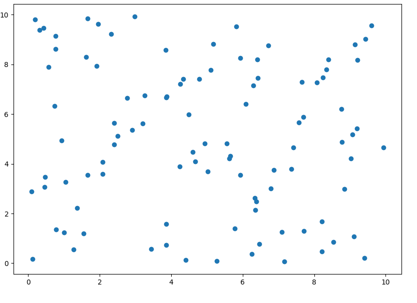
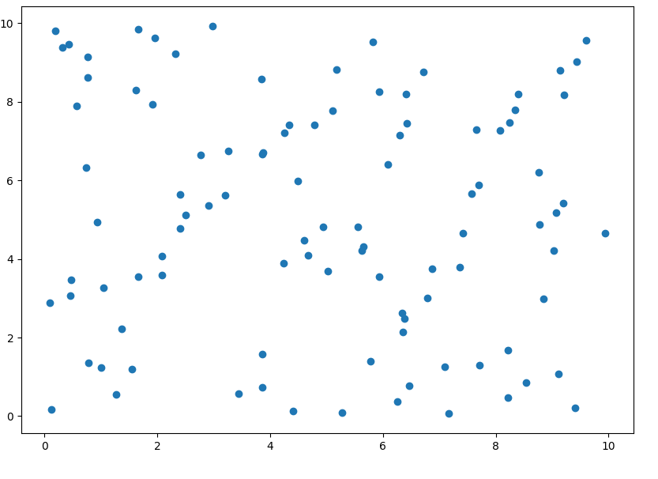
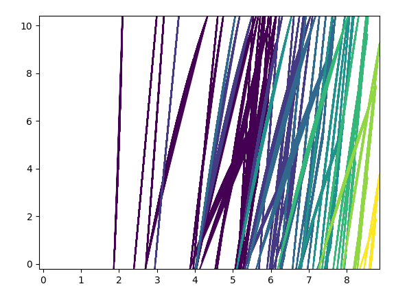

Output
Parismita Das
11 January 2018
The output of firefly algorithm on a non convex rosenburg objective function is given below. The rosenburg function theoritically has minima at (1,1). Thus we show from code that the best value converges to (1,1).
here I am plotting the contour plot for every 10th iteration for firefly.
 

initial value of contour and variants as given above.
10th iteration:
best value : [1.00606871 1.00701511]
loss: 0.004125894795

20th iteration:
best value [1.00424683 1.00791168]
loss 7.41994381111e-05

30th iteration:
best value [1.00410473 1.00797904]
loss 2.66335247253e-05
The final plot and clusters
best value [1.00400901 1.00801837]
loss 1.61509216648e-05
Doing mlp on mnist, there are 55,000 training data. The mlp is taking 1 day per epoch as there are 10^9 computations per firefly thus taking 1 minute per firefly. To decrease the time taken, we can use the optimised firefly algorithm whose time complexity is O(nlogn). and take smaller minibatch and lesser variant size.